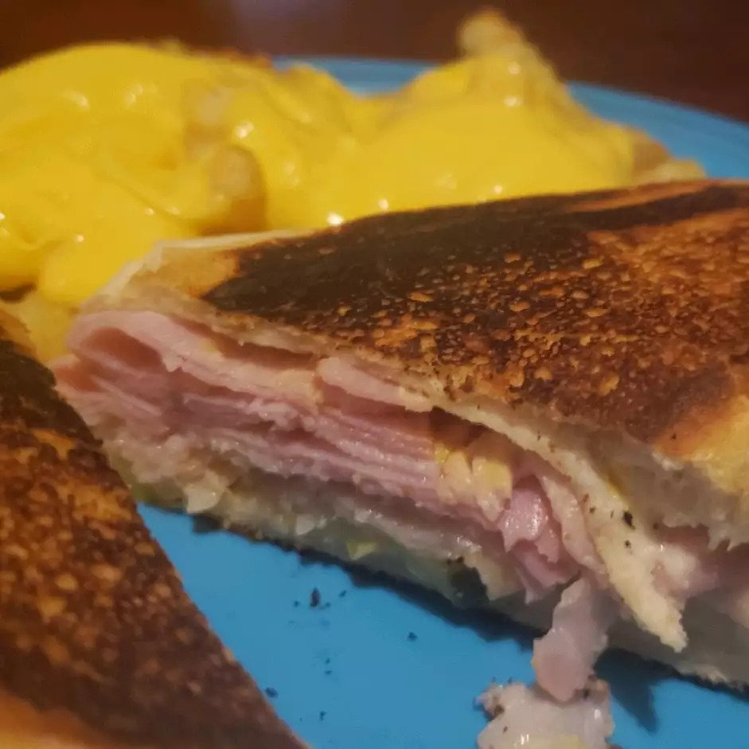

back
Cuban Midnight Sandwich

Details
- Prep: 20 minutes
- Cook: 5 minutes
- Total: 25 minutes
- Servings: 4
- Yield: 4 sandwiches
Ingredients
- 1 cup mayonnaise
- 5 tablespoons Italian dressing
- 4 hoagie rolls, split lengthwise
- 4 tablespoons prepared mustard
- 1/2 pund thinly sliced deli turkey meat
- 1/2 pound thinly sliced cooked ham
- 1/2 pound thinly sliced swiss cheese
- 1 cup dill pickle slices
- 1/2 cup olive oil
Directions
- In a small bowl, mix together mayonnaise and Italian dressing. Spread mixture on hoagie rolls. Spread each roll with mustard. On each roll, arrange layers of turkey, ham, and cheese. Top each with dill pickle slices. Close sandwiches, and brush tops and bottoms with olive oil.
- Heat a non-stick skillet over medium high heat. Place sandwiches in skillet. Cook sandwiches for 2 minutes, pressing down with a plate covered with aluminum foil. Flip, and cook for 2 more minutes, or until cheese is melted. Remove from heat, place on plates, and cut in half diagonally.